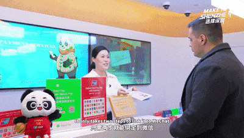

Getting to Shenzhen & Thriving Here
Most APEC delegates will arrive through Hong Kong — and that's by design. The 15-minute high-speed rail from Hong Kong West Kowloon to Shenzhen Futian is the fastest international border crossing in the world. Here's everything you need to know to arrive prepared. For context on what awaits you beyond the logistics — the city’s neighborhoods, food scene, and natural landscapes — see the Explore Shenzhen guide.
How to Get Here
Three routes, each straightforward. The first is by far the most common for international delegates.
Via Hong Kong
Fly into Hong Kong International Airport (HKG) — one of the world's best-connected airports. From there, take the high-speed rail from Hong Kong West Kowloon station to Shenzhen Futian: exactly 15 minutes, trains every 10–15 minutes, ~80 RMB (~$11 USD). You clear Chinese immigration at Futian station. The entire door-to-door journey from HKG arrival gate to Shenzhen hotel can take under 90 minutes.
Once across the border, you’re in Luohu — one of Shenzhen’s oldest and most vibrant districts. The Explore Shenzhen guide covers what to see and eat there.
Direct to Shenzhen
Shenzhen Bao'an International Airport (SZX) has direct flights from major Asian hubs — Tokyo, Seoul, Singapore, Bangkok, Kuala Lumpur — and increasing European connections. Airport Metro Line 11 reaches Futian in 45 minutes.
From Guangzhou
High-speed rail from Guangzhou South to Shenzhen North takes 30–35 minutes, departing every 10 minutes from 6am to 11pm.

Shenzhen Bao'an International Airport — payment and service centre.
Do You Need a Visa?
It depends on your nationality and travel card status. Here are the four scenarios that cover most delegates.
Hong Kong side trip: Shenzhen to Hong Kong requires a separate visa/entry permit for most nationalities, even though they're minutes apart. Many nationalities get HK visa on arrival; check in advance.
Where APEC Delegates Stay
Three neighborhoods, three trade-offs. Here's an honest breakdown.
Nanshan / Shekou
20 minutes from the venue by taxi, but you'll be in Shenzhen's most international neighborhood — great restaurants, waterfront, and the Sea World area. Good boutique hotel options at slightly lower rates.
Luohu
Budget-friendly and right at the Hong Kong border. Good if you plan frequent HK side trips. Less convenient for APEC events.
Money in China: What Foreigners Must Know
This is the thing that catches most visitors off guard.
China is virtually cashless. WeChat Pay and Alipay are accepted everywhere from street vendors to luxury hotels. CRITICAL: Download WeChat and Alipay before arriving in China and link your international credit card. Without these, you'll struggle to pay for basic things like taxis, coffee, and restaurant meals.
Cash (RMB) is technically accepted but increasingly uncommon. Don't rely on it.
Credit cards (Visa/Mastercard) work at major hotels and upscale malls, but not at small shops, taxis, or most restaurants.
ATMs are everywhere but most are UnionPay-only. Some accept international cards — look for Citibank, HSBC, or Bank of China ATMs.
The Apps You Actually Need
Five downloads. Skip everything else.
Communication, payments, mini-programs — the Swiss Army knife of Chinese life.
Alipay
Payments everywhere. Your backup to WeChat.
Baidu Maps
Navigation. Google Maps has limited data in China.
Didi
Ride-hailing. Uber doesn't operate in China.
Ctrip / Trip.com
Hotels, flights, trains. Accepts international credit cards.
Weather in November
APEC 2026 will likely be held in October–November. This is the best time to visit Shenzhen.
Daytime
22–30°C
Nighttime
18–22°C
Low humidity, mostly sunny skies.
Typhoon season is over by October.
Pack: business formal for sessions, light casual for exploring, comfortable walking shoes, a light jacket for evening.
Emergency Numbers & Contacts
110
Police
120
Ambulance
119
Fire
0755-12301
Tourist Hotline
English-speaking operators may be limited — ask hotel concierge for assistance.
Cultural Tips That Matter
Three things that genuinely help. Skip the rest.
No Tipping
Tipping is not customary in China and may be politely refused.
Business Cards
Give and receive with both hands. Take a moment to read before putting away.
Chopsticks
Never stick them upright in rice — this symbolizes death offerings.